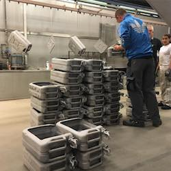

JerryBars – minibary z kanistrov
Na webovej stránke spoločnosti JerryBars nájdete ponuku našich produktov - originálnych kanistrov z 2. svetovej vojny ručne prerobených na minibary. Nájdete tu rôzne informácie o kanistroch a ich histórii či inšpirácie na dekoráciu Vášho bývania. Na tomto webe si môžete JerryBars aj zakúpiť a doručíme Vám ich až domov.
O nás
Keď sme začínali pred takmer dekádou, boli sme iba dvaja rojkovia, ktorí chceli vytvoriť niečo, čo ešte neexistovalo. Postupom času sa náš tím niekoľkonásobne rozrástol, stále sa však držíme pôvodných cieľov. Chceme meniť svet, tvoriť niečo jedinečné a to nás všetkých spája.
Silný tím je základ každého úspešného konceptu. Každý člen nášho tímu prispieva svojimi návrhmi. Od nápadu, cez dizajn a prvý prototyp, vývoj je neustály proces s optimalizáciou konceptov aby spĺňali najvyššie štandardy našej značky.
Zaujíma Vás kde pracujeme, náš dizajn alebo naša história? Podrobné informácie sa dočítate v sekcii o nás.
Produkty
Ponúkame JerryBars v rôznych edíciach a farebných vyhotoveniach. Či už máte radi tradičnú armádnu zelenú, preferujete elegantnú čiernu alebo radšej bielu, z našej ponuky si vyberiete.
Najpredávanejšie
-
JerryBar Exclusive Black

- cena s DPH
- 4 000 Kč / 150 €
- dostupnosť
- skladom
Kanister z najlepších materiálov v originálnej čiernej farbe. Obsahuje 4 fľaše ginu a poháre.
zobraziť detaily -
JerryBar Exclusive Copper

- cena s DPH
- 4 000 Kč / 150 €
- dostupnosť
- skladom
Limitovaná edícia so špeciálnou povrchovou úpravu s prímesou medi. Obsahuje 4 fľaše ginu a poháre.
zobraziť detaily
Galéria
Chcete vidieť JerryBars v reálnom svete, nielen na produktových fotografiách? Zaujíma Vás zákulisie výroby našich kanistrov? Prezrite si galériu, kde nájdete nielen to.
Najnovšie príspevky
-
- dátum
- 16.2.2017
- tagy
- JerryBar, exclusive, black, doplnok
JerryBar skrášľuje stenu aj v tomto apartmáne. Moderný bytový doplnok do moderného bytu.
-

- dátum
- 5.11.2016
- tagy
- dielňa, výroba, kanistre, JerryBars
Takto pripravujeme kanistre v našich dielňach. Najprv ich zreštaurujeme a potom prerobíme na JerryBars.
Kontakt
Potrebujete poradiť? Chcete sa s nami podeliť o Váš názor? Neváhajte sa na nás obrátiť s akoukoľvek otázkou, nápadom či názorom.
Sme Vám k dispozícii na tel. čísle +421 944 640 199. Okrem telefónu môžete využiť aj kontaktný formulár nižšie.